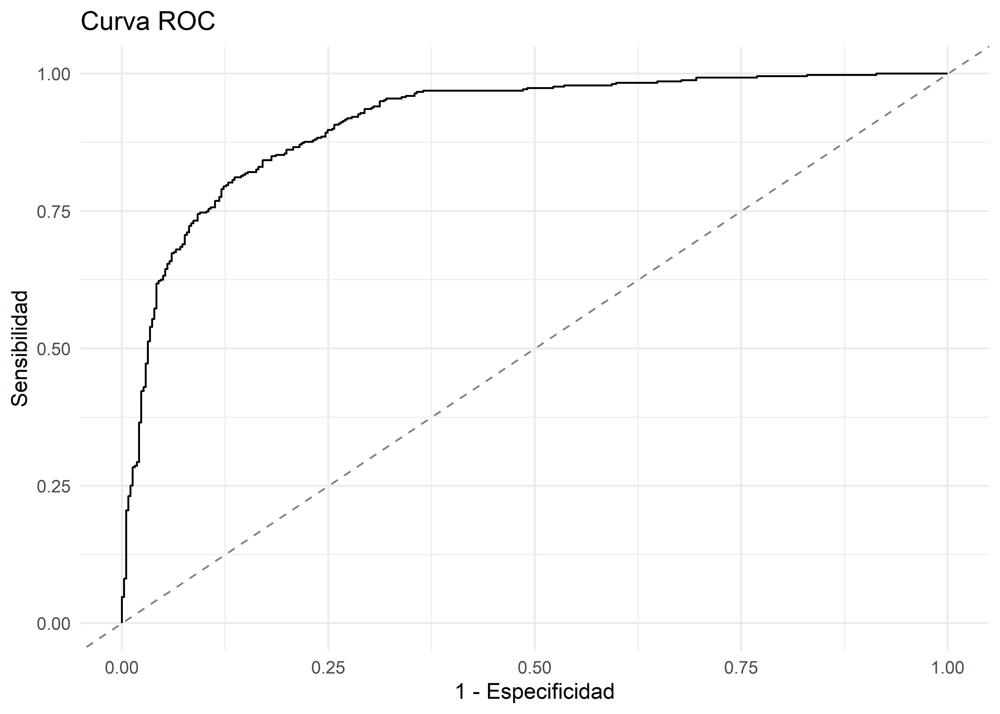

Estudios de casos y controles
Este material es parte de la Unidad 4 del Curso de Epidemiología - Nivel Avanzado del Instituto Nacional de Epidemiología “Dr. Juan H. Jara” - ANLIS
Estudios de casos y controles by Andrea Silva, Christian Ballejo y Tamara Ricardo is licensed under CC BY-NC 4.0 


Introducción
Un estudio de casos y controles (cyc) es un estudio analítico observacional que comienza con la identificación de un grupo de casos (personas que sufren algún evento particular de salud) y un grupo de controles (individuos que no tienen esa condición). Entonces, la frecuencia de la exposición a un factor se mide en los dos grupos y se compara. Básicamente, la hipótesis que subyace en un estudio de cyc es que si la frecuencia de la exposición es mayor en casos que en controles, la exposición podría ser un factor de riesgo, mientras que si es menor, la exposición podría ser un factor protector.
Los principales aspectos metodológicos a tener en cuenta para llevar adelante un estudio de casos y controles son:
- Definición precisa de la variable dependiente.
- Definición de las variables independientes o de la/las exposición/es de interés.
- Fuente y criterios de selección de los casos.
- Definición, fuente y criterios de selección de los controles.
- Análisis estadístico
Repasaremos algunos de los ítems vinculados al diseño en sí, para luego adentrarnos en la parte del análisis.
Comenzaremos diciendo que es fundamental tener criterios precisos para la definición de caso. Los criterios pueden estar basados en resultados de pruebas de laboratorio o pueden estar basados en la historia clínica o en encuestas. Algunos autores según la definición de casos, diferencian dos tipos importantes de estudios de casos y controles:
Estudios de casos y controles con casos incidentes. Los casos del estudio se limitan a los casos nuevos de la enfermedad que aparecen durante el periodo de estudio.
Estudios de casos y controles con casos prevalentes. Los casos son todos aquellos pacientes que tienen la enfermedad en un momento determinado.
Algunos autores consideran a los estudios de casos y controles como una estrategia metodológica para estudiar una cohorte. Esto nos permite visualizar dos modalidades de selección de casos:
los que semejan las cohortes de densidad de incidencia donde los casos se reclutan a medida que se van presentando (incidentes). Generalmente se utilizan en el contexto de casos incidentes con periodos de exposición o latencia prolongados
los que semejan cohortes de incidencia acumulada, donde los casos se seleccionan al final del estudio, establecido previamente el período de seguimiento.
Selección de los controles La fuente de los controles quedará definida en la medida en que se definan claramente los criterios de selección de casos, así como la población hipotética de origen. Las principales consideraciones serían:
- Los controles deben seleccionarse de la misma base poblacional (de la cohorte hipotética) de donde se originaron los casos. La idea sería que si uno de estos controles desarrollara el evento en cuestión, pasaría a formar parte del grupo de los casos. Esto último implica que los controles estuvieron en riesgo de desarrollar el evento en forma simultánea a los casos.
- Los controles deben seleccionarse independientemente de su condición de expuestos o no expuestos.
- La probabilidad de selección para los controles debe ser proporcional al tiempo que el sujeto estuvo en riesgo de desarrollar el evento o enfermedad en estudio
- Para evitar la confusión, es posible aparear por las variables confusoras en la fase de diseño
- Los procedimientos para medir la exposición, deben ser los mismos, tanto en casos como en controles
Existen diferentes posibilidades de obtención de controles, como: poblacionales, hospitalarios, de vecindario, controles obtenidos de un registro de mortalidad, etc; dependerá de la fuente de casos.
Variantes de los estudios de casos y controles
En los últimos tiempos, se ha profundizado en los aspectos metodológicos de los estudios de casos y controles; y también se ha clarificado la estrecha relación que existe con los estudios de cohorte, lo que ha permitido el desarrollo de diferentes variantes. Describiremos brevemente algunas de ellas a continuación:
Estudios caso-cohorte. En esta variante, la definición de casos y controles se encuentra anidada en una cohorte fija, se utiliza un enfoque de incidencia acumulada.
Estudios de casos y controles anidado o de grupo de riesgo. Es similar al anterior, sólo que se trata de una cohorte dinámica, y un enfoque de densidad de incidencia.
Estudios caso-autocontrol. Esta variante utiliza al mismo sujeto que se consideró como caso, como su propio control. Este tipo de estrategia se suele utilizar para exposiciones que son de corta duración y que cambian en el tiempo y con eventos que son fáciles de detectar.
Estudios de mortalidad proporcional. Tanto los casos como los controles se obtienen de los registros de mortalidad poblacionales. Rothman dice que este tipo de controles son aceptables, sólo si la distribución de la exposición entre los grupos es similar a la que presenta la base poblacional.
Estudios de caso-caso. En esta estrategia se compara la historia de exposición en subgrupos de casos. En el caso de enfermedades infecciosas, es posible conformar diversos subgrupos de enfermedad, partiendo de datos de vigilancia epidemiológica.
Quienes desean profundizar estos tópicos sobre el diseño de los CyC, pueden leer el capítulo correspondiente de “Epidemiología. Diseño y análisis de estudios” de Hernández-Ávila (2011). Comenzaremos ahora con la parte de análisis de estos diseños.
Análisis estadístico
Primeramente, recordemos que la medida de asociación empleada en CyC es el Odds ratio (OR). Como ustedes ya habrán estudiado previamente, el análisis de los estudios de casos y controles se basa en los conceptos de odds y odds ratios y se realiza mediante la comparación de casos y controles con respecto a la frecuencia de exposición a través del odds ratio de la exposición, que es el odds de la exposición entre los casos dividido por el odds de la exposición entre los controles.
Ahora, en esta nueva versión multivariada, la metodología más apropiada es la regresión logística en estudios de casos y controles no apareados, y regresión logística condicional en estudios de casos y controles apareados.
La Regresión Logística
Se utiliza cuando la variable dependiente es dicotómica o binaria (éxito-fracaso; Si-No). Las variables independientes pueden ser de cualquier tipo (dicotómicas, categóricas, o numéricas discretas o continuas). Consideremos un evento de salud que puede ocurrir o no (variable dependiente). Por ejemplo:
- Un paciente hospitalizado muere o no, antes del alta.
- Un niño nace con o sin una malformación congénita.
- Un sujeto operado se infecta o no, en el postoperatorio.
- Un niño camina/no camina a los 11 meses.
- Una droga mejora/no mejora síntomas depresivos
Cuando vimos Regresión Lineal Múltiple, la variable dependiente era continua y nos era posible modelarla mediante la regresión lineal, siguiendo la ecuación de una recta. Ahora, nuestra variable resultado es dicotómica:
\(Y= 1\) \(\rightarrow\) si el hecho ocurre;
\(Y= 0\) \(\rightarrow\) si el hecho no ocurre.
La aproximación lineal, no parece representar adecuadamente variables que sigan este tipo de distribución:
Matemáticamente, hay otra función que puede representar mejor esta situación, que es la exponencial:

En vez de la ecuación de la recta, ahora tenemos otra ecuación que expresa la variable respuesta (\(Y\)) en función de la/las variables independientes, en realidad expresa la probabilidad de que ocurra un hecho en función de ciertas variables que se presumen relevantes.
La expresión analítica es:
\[ P(Y=1)_x=\frac{1}{1+e^{(-\alpha-\beta_1X_1-\beta_2X_2-\dots-\beta_kX_k)}} \]
Para comprender lo que significan los coeficientes \(\beta\) del modelo, vamos a hacer algunas operaciones matemáticas. Comenzaremos dividiendo ambos miembros de la ecuación por \(1-P_{(Y=1)}\), lo que se denomina transformación logística:
\[ \frac{P(Y=1)_x}{1-P(Y=1)_x}=\frac{\frac{1}{1+e^{(-\alpha-\beta_1X_1-\beta_2X_2-\dots-\beta_kX_k)}}}{1-\frac{1}{1+e^{(-\alpha-\beta_1X_1-\beta_2X_2-\dots-\beta_kX_k)}} } \]
Si ahora aplicamos logaritmo natural (\(ln\)) a ambos miembros de la ecuación, y aplicamos propiedades de los logaritmos, nos queda:
\[ ln\bigg[\frac{P_x}{1-P_x}\bigg] = \alpha + \sum\beta_ix_i \]
Si observamos el término que está entre corchetes, recordaremos que el cociente entre la probabilidad que un suceso ocurra, y la probabilidad de que no ocurra, es lo que conocemos como Odds, entonces:
\[ ln(Odds) = \alpha+\sum\beta_ix_i \]
Si despejamos Odds de la ecuación anterior, podemos concluir entonces que:
\[ Odds = e^{(\alpha+\sum\beta_ix_i)} \]
Para comprender mejor cómo se interpretarán los coeficientes en la regresión logística, supongamos que queremos modelar la probabilidad de que un suceso ocurra (\(P_{(Y=1)}\)) en función de una única variable independiente dicotómica, que toma el valor 0 cuando está ausente (\(x=0\)) y 1 cuando está presente (\(x=1\)). Entonces:
Para \(x=1\)
\[ Odds_{enfermar/expuestos}=e^{(\alpha+\beta)} \]
Para \(x=0\)
\[ Odds_{enfermar/expuestos}=e^{(\alpha)} \]
Entonces, si queremos calcular el OR:
\[ OR = \frac{e^{(\alpha+\beta)}}{e^\alpha}=e^\beta \]
Por lo tanto:
\[ ln\; OR = \beta \]
De esta forma, vemos que \(\beta\) = incremento del logaritmo del OR por cada unidad de incremento de \(x\).
Extendiendo el razonamiento para la regresión logística múltiple, es decir cuando modelamos en función de más de una variable independiente, ya sea dicotómica, ordinal, nominal o continua, volvemos a la ecuación:
\[ ln(Odds) = \alpha + \sum\beta_ix_i \]
Donde cada \(\beta_i\): Incremento en log-odds para una unidad de incremento en \(x_i\) con todas las otras \(x_i\)s constantes.
Incluimos esta deducción para facilitar la comprensión del tema, pero para quienes el lenguaje matemático les es adverso, pueden hacer un “acto de fe” y quedarse con las conclusiones.
Al igual que hicimos en RLM, exploraremos el significado de una salida de R para modelos de regresión logística, antes de comenzar a modelar.
Interpretación de modelos de regresión logística múltiple (RLogM)
Observemos una salida de R, para un modelo de RLogM
Call:
glm(formula = camina ~ edad_meses + lacto_180, family = binomial,
data = datos)
Coefficients:
Estimate Std. Error z value Pr(>|z|)
(Intercept) -7.02459 0.54972 -12.78 <2e-16 ***
edad_meses 0.39349 0.03566 11.04 <2e-16 ***
lacto_180Si 3.08217 0.22467 13.72 <2e-16 ***
---
Signif. codes: 0 '***' 0.001 '**' 0.01 '*' 0.05 '.' 0.1 ' ' 1
(Dispersion parameter for binomial family taken to be 1)
Null deviance: 1107.23 on 799 degrees of freedom
Residual deviance: 593.57 on 797 degrees of freedom
AIC: 599.57
Number of Fisher Scoring iterations: 5Donde:
\(Estimate\): muestra los coeficientes \(\beta\) estimados para el intercepto (\(\beta_0\)) y cada una de las variables explicativas (\(\beta_i\)),
\(Std. \; Error\) : error estándar de cada coeficiente,
\(z-value\): coeficientes del test de Wald,
\(Pr(>z|t|)\) : \(p\)-valores para el test de Wald,
En el párrafo final encontramos:
\(Null \; deviance\): deviance del modelo nulo,
\(Residual \; deviance\): deviance del modelo actual
\(AIC\): Criterio de Información de Akaike
Profundicemos ahora en lo que significan algunos de estos puntos.
- Test de Wald: En forma similar al test \(F\) parcial de la RLM, el test de Wald testea la \(H_0 = \beta_i=0\). Hemos expresado el marco de prueba de hipótesis en términos de la pendiente \(\beta_i\) porque esta forma se parece mucho a lo que estudiamos en regresión lineal. En muchas aplicaciones, sin embargo, los resultados se expresan en términos de OR. Una pendiente de 0 es lo mismo que una razón de probabilidades de 1, por lo que a menudo expresamos la hipótesis nula de interés como “la razón de posibilidades es 1”. Esto significa que las dos probabilidades son iguales y la variable explicativa no es útil para predecir las probabilidades.
Recordemos que los \(\beta\), no se interpretan según los valores que observamos en la salida anterior, sino que debemos calcular el exponencial de los coeficientes.
- Para entender lo que es la Deviance, debemos explicar algunas cosas antes.
Como recordarán, en la RLM para obtener los \(\beta\) lo hacíamos por el método de mínimos cuadrados. ¿Cómo se estiman los \(\beta\) en la regresión logística? La estimación por el método de máxima verosimilitud (o maximum likelihood ML) es el método preferido para la estimación de los parámetros en la Regresión Logística no condicionada. Su fundamento consiste en utilizar la información disponible de los datos de la muestra para elegir el valor del parámetro para el cual es más probable haber observado ese resultado muestral. Se calcula mediante un proceso iterativo.
Por tanto, una medida razonable para valorar el grado en que el modelo arroja resultados coherentes con los datos, sería el producto de todas las probabilidades (predichas por el modelo) de que los \(n\) sujetos de la muestra empleada para su construcción tengan la condición que realmente tienen. Es decir, que un buen modelo sería el que asigne una \(p=1\) a cada sujeto que realmente tenga la condición y \(p=0\) a cada sujeto libre de ella, y correspondería una verosimilitud máxima de 1. Por el contrario, un modelo deficiente tendría una verosimilitud pequeña, cercana a 0. En consecuencia, la proximidad de la verosimilitud a 1 expresa cuán eficiente ha sido el ajuste realizado para modelar la realidad.
Para evaluar la calidad de ajuste de un modelo de regresión logística se puede utilizar:
- Análisis de la función desvío o análisis de Deviance, también llamada Lejanía o devianza
- Test de la razón de verosimilitud o likelihood ratio test (LRT)
La Deviance (\(D\)) se define como:
\(D= -2ln V\) (\(V\) = Verosimilitud)
Dado que, como ya dijimos, \(V<1\), su logaritmo siempre será negativo; de modo que la Deviance siempre será un número positivo. El grado de ajuste de un modelo será mejor cuanto más próxima a 1 es la verosimilitud y, en consecuencia, cuanto más se aproxima a cero la devianza.
Al ajustar el modelo se calculan dos \(D\): la que corresponde al “modelo nulo” (\(D_0\)) que es aquel en que no se ha incorporado ninguna variable independiente y la \(D_f\) del modelo. La diferencia (cociente) entre estas dos devianzas mide el “aporte” que hacen las variables incorporadas al modelo: \(-2ln V_0 – (-2ln V_f)\)
La lejanía del modelo nulo es más grande que la de cualquier modelo ampliado. Esto es razonable, debido a que se trata de un modelo mucho menos sofisticado (que no incorpora información alguna de posibles variables “explicativas”) y debe necesariamente tener una incapacidad predictiva mayor.
Por su parte, el Likelihood Ratio usa la diferencia entre la probabilidad de obtener los valores observados con el modelo logístico creado y las probabilidades de hacerlo con un modelo sin relación entre las variables. Para ello, calcula la significancia de la diferencia de residuos entre el modelo con predictores y el modelo nulo (modelo sin predictores). Es equivalente a \(D\).
\[ D_0 - D = -2lnV_0 + 2lnV = -2ln(V_0-V) = -2ln\bigg(\frac{V_0}{V}\bigg) \]
\(V_0/V\) es el Likelihood Ratio.
El Likelihood Ratio Test, testea la significancia de incorporar variables al modelo, comparándola con el modelo nulo.El estadístico tiene una distribución chi-cuadrado con grados de libertad equivalentes al número de predictores del modelo generado.
- AIC: lo vimos en RLM, pero ahora que sabemos algunas cosas más, podemos definirlo mejor. El Criterio de Información de Akaike (AIC) es una medida de la calidad relativa de un modelo estadístico, para un conjunto dado de datos. Como tal, el AIC proporciona un medio para la selección del modelo. Lo definimos como:
\[ AIC= 2k – 2ln(D) \]
donde \(k\): número de parámetros del modelo
Comparación de modelos:
Para comparar modelos de RLog, podemos usar: AIC, LRT o un ANOVA entre los modelos.
En la expresión del AIC : \(AIC= 2k – 2ln(D)\); el primer término penaliza por la incorporación de variables al modelo, mientras que el segundo compensa por la bondad del ajuste. Dado un conjunto de modelos candidatos para los datos, el modelo preferido es el que tiene el valor mínimo de AIC.
El Likelihood Ratio Test también permite la comparación entre 2 modelos. En este caso, ya no se trata del cociente entre el modelo nulo y el actual, sino entre la \(V\) de dos modelos a comparar. El estadístico tiene una distribución Chi-cuadrado con grados de libertad dados por la diferencia de grados de libertad de los dos modelos comparados.
En R, la función anova() nos permite también la comparación:
Analysis of Deviance Table
Model 1: camina ~ edad_meses + lacto_180
Model 2: camina ~ edad_meses
Resid. Df Resid. Dev Df Deviance Pr(>Chi)
1 797 593.57
2 798 848.53 -1 -254.96 < 2.2e-16 ***
---
Signif. codes: 0 '***' 0.001 '**' 0.01 '*' 0.05 '.' 0.1 ' ' 1Calidad de ajuste en Regresión Logística
De manera análoga al Coeficiente de Determinación (\(R^2\)) que se emplea para la Regresión Lineal, se han desarrollado varios coeficientes para estimar la proporción de varianza de la variable dependiente explicada por las variables independientes, aplicables los modelos de Regresión Logística.
- El coeficiente de McFadden
- El coeficiente de Cox y Snell
- El Coeficiente de Nagelkarkle (este último es una versión corregida del anterior, cuyo valor máximo es menor a 1 incluso para un modelo perfecto, por eso, en muchos casos el \(R^2\) de Cox y Snell tiende a subestimar el coeficiente).
- El coeficiente de Tjur, que calcula el Coeficiente de Discriminación (\(D\)) para modelos lineales generalizados con variable respuesta binaria.
En R, podemos calcular estos coeficientes mediante las funciones r2_mcfadden(), r2_coxsnell(), r2_nagelkerke(), r2_tjur() del paquete performance.
# McFadden
r2_mcfadden(mod1)# R2 for Generalized Linear Regression
R2: 0.464
adj. R2: 0.462# Cox y Snell
r2_coxsnell(mod1)Cox & Snell's R2
0.4738034 # Nagelkerke
r2_nagelkerke(mod1)Nagelkerke's R2
0.632214 # Tjur
r2_tjur(mod1)Tjur's R2
0.5368622 Estos coeficientes no miden calidad de ajuste, sino proporción de la varianza explicada.
Uno de los test de bondad de ajuste más usados en RLog es el test de Hosmer-Lemeshow. Como otros test de bondad de ajuste compara la probabilidad predicha por el modelo con la probabilidad de los datos de la muestra. El estadístico se calcula a través de varios grupos empleando los deciles de las probabilidades predichas por el modelo, y comparando las frecuencias observadas en dichos grupos con las esperadas. Este estadístico sigue una distribución de \(\chi^2\) con \(n-2\) grados de libertad (\(n\)= número de casos). Aquí la Hipótesis nula es que el modelo se ajusta a la realidad. En un test de bondad de ajuste siempre en la hipótesis nula se afirma que el modelo propuesto se ajusta a lo observado. Por lo tanto, un \(p-valor\) superior a 0.05 implica que lo que observamos se ajusta suficientemente a lo que esperado bajo el modelo. En R podemos aplicar la función performance_hosmer() perteneciente al paquete performance.
Capacidad predictiva de un modelo de RLog
Otro aspecto a evaluar en un modelo de RLog es la discriminación (grado en que el modelo distingue entre individuos en los que ocurre el evento y los que no). Como medida de la discriminación se usa el área bajo la curva de receiver operating characteristic (ROC) construida para la probabilidad predicha por el modelo, que representa, para todos los pares posibles de individuos formados por un individuo en el que ocurrió el evento y otro en el que no, la proporción de los que el modelo predice una mayor probabilidad para el que tuvo el evento. Para quienes tengan profesiones vinculadas al diagnóstico, los conceptos de sensibilidad, especificidad y curvas ROC, les resultarán muy familiares. Es posible que para el resto no lo sea tanto, por lo que haremos algunas explicaciones adicionales.
Para comprobar la efectividad de un modelo en la clasificación de observaciones, se puede construir una tabla de clasificación donde se cruza el verdadero valor de la observación (1 o 0), con la predicción de la misma según el modelo que se considere. Como nuestro modelo de RLog calculará probabilidades entre 0 y 1, tendremos que fijar un valor de corte en forma arbitraria: por ejemplo podríamos considerar que valores de probabilidad estimados por el modelo superiores a 0,5 serán considerados como que el evento ha ocurrido, mientras que probabilidades de 0,5 o menos, consideraremos que no.
Se resume la capacidad predictiva de un modelo de RLog mediante el concepto de sensibilidad:
\(P(\hat{y}= 1|y=1)\)
y mediante el concepto de especificidad:
\(P(\hat{y}= 0|y=0)\)
Es decir, la predicción de éxito/de que el suceso ha ocurrido/etc. cuando es cierto se denomina sensibilidad y la predicción de un fracaso/de que el suceso no ha ocurrido/etc., cuando es, a su vez cierto, se denomina especificidad.
Una curva ROC es un gráfico en el que se representa la sensibilidad en función de (1 – especificidad). Si vamos modificando los valores del valor de corte y representamos la sensibilidad (en ordenadas) frente a (1 – especificidad) (en abscisas) tenemos la curva ROC. Cuanto mayor sea el área bajo la curva, mejores serán las predicciones.

En resumen
Para evaluar un modelo de RLog, deberíamos observar:
- Coeficientes de determinación : % de variabilidad explicada por el modelo
- Test de Hosmer‐Lemeshow : bondad de ajuste, diferencia entre los valores predichos por el modelo y los valores observados en la muestra.
- Comparación de modelos: LRT/ANOVA/AIC
- Curva ROC : capacidad predictiva (especialmente cuando el propósito de la RLog es predictivo)
- Intervalos de confianza (exactitud del coeficiente).
Ejemplo práctico en lenguaje R
La regresión logística es uno de los modelos de la familia de modelos lineales generalizados (GLM de las siglas en inglés de Generalized Linear Models), utilizado para predecir la probabilidad de que ocurra un evento binario (ej: enfermo/no enfermo, infectado/no infectado, sobreviviente/fallecido, etc.) en función de una o más variables independientes. Estos modelos son una extensión de los modelos lineales que permiten utilizar distribuciones no normales de los errores (binomiales, Poisson, gamma, etc) y varianzas no constantes.
Se caracterizan por tener una estructura de errores particular y una función de enlace entre la variable respuesta y la(s) variable(s) independiente(s).
Para las regresiones logísticas, como la variable respuesta es binomial (0, 1) la estructura de errores pertenecerá a la familia de distribución binomial y la función de enlace habitual para linealizar la relación entre la variable respuesta y la(s) variable(s) independiente(s) es la función \(logit\), , que es el logaritmo natural del odds-ratio (OR).
Construcción de un modelo de regresión logística en R
El ajuste de un modelo de regresión logística puede hacerse a través de la función glm(), que sirvepara modelar modelos lineales generalizados.
La sintaxis básica de esta función, contenida en el paquete stats de R base, es:
glm(formula, family = binomial(link = "logit"), data)
donde:
formula: al igual que en la regresión lineal, es la fórmula que describe el modelo a ajustar. Sigue la estructura:
\[ variable\_dependiente \sim variable\_indep_1 + variable\_indep_2 +\dots+ variable\_indep_n \]
family: hace referencia a la familia de distribuciones y, en link, a la función de enlace elegida para el ajuste de este modelo. Las opciones disponibles son:family = gaussian(), usada cuando la variable dependiente es continua normal. Tiene como función de enlace por defectolink = "identity", lo cual equivale al ajuste de un modelo de regresión lineal, pero también admite las funciones de enlace logaritmo (link = "log") e inversa (link = "inverse").family = binomial(), usada cuando la variable dependiente es binomial. Tiene tiene como función de enlace por defecto el logit (link = "logit"), admitiendo también los enlaces probit (link = "probit"), cauchit (link = "cauchit"), logaritmo (link = "log") y cloglog (link = "cloglog").family = poisson(), usada para variables dependientes numéricas discretas. Tiene como función de enlace por defecto el logaritmo (link = "log"), permitiendo también los las funciones de enlace identidad (link = "identity") y raíz cuadrada (link = "sqrt").family = Gamma()family = inverse.gaussian()family = quasi()family = quasibinomial()family = quasipoisson()
Estas posibilidades abarcan la mayor parte de las familias de GLMs existentes. Sin embargo, a lo largo de este curso nos centraremos en aquellas más utilizadas en el análisis de datos epidemiológicos: gaussian (desarrollada en la Unidad 3), binomial (Unidad 4) y poisson (Unidad 5) con sus funciones de enlace canónicas, es decir, aquellas que se aplican por defecto a cada una de las distribuciones de errores.
Si la función de enlace (link) no se especifica, la primera opción de la lista es tomada como opción predeterminada en cada caso. Por ejemplo, si omitimos el argumento (link = "logit") de todas maneras quedaría definido ese mismo enlace para la familia binomial.
data: indica el nombre de la base de datos (dataframe) que contiene las variables del modelo.
La salida de resultados de esta función puede obtenerse a través de la función summary() al igual que en la regresión lineal. La sintaxis es summary(nombre_modelo), siendo nombre_modelo el nombre del modelo ajustado).
La resultados del objeto de regresión mostrados están compuesto por:
Call: fórmula del modelo
Deviance Residuals: distribución de los residuos (mediana, mínimo, máximo y percentilos 25-75) obtenidos en la última iteración
Coefficients: coeficientes del Intercept y los asociados a cada variable independiente. Además se agregan los errores estándar y el valor z (estadístico de Wald que surge del cociente entre el coeficiente y su error estándar) con el p-valor correspondiente.
Si a estos coeficientes le aplicamos la función exp() (exponencial o función inversa del logaritmo natural) obtenemos el Odds Ratio (OR). Esto quiere decir que los coeficientes de las variables independientes se interpretan como el OR de que ocurra el suceso para cada incremento de la variable independiente, manteniendo constante o ajustando por el resto de las variables independientes.
Otra forma de visualizar los coeficientes exponenciados es mediante la función tbl_regression(modelo, exponentiate) del paquete gtsummary, especificando exponentiate = TRUE.
Null deviance: deviance para el modelo nulo que solo contiene la constante.
Residual deviance: deviance del modelo ajustado.
AIC: Criterio de Información de Akaike.
Number of Fisher Scoring iterations: cantidad de iteraciones.
Este resumen surge del objeto de regresión construido cuando asignamos la salida de la función glm() que pertenece a la clase “glm” y “lm”.
El objeto de regresión está compuesto por 30 componentes que pueden accederse a través del nombre del modelo seguido del signo $ y el nombre del componente.
Entre los componentes más relevantes podemos señalar (usaremos nombre_modelo como generalización del nombre del objeto creado):
nombre_modelo$coeficients: vector de coeficientes del modelo. También se puede obtener a través de la función coef(nombre_modelo)
nombre_modelo$residuals: vector que contiene los residuos obtenidos en la última iteración.
nombre_modelo$fitted.values: vector con los valores medios ajustados, obtenidos según la transformación de los predictores lineales por la inversa de la función de enlace.
nombre_modelo$family: devuelve la familia utilizada en la construcción del modelo.
nombre_modelo$deviance: deviance del modelo ajustado o -2 veces el máximo de la log verosimilitud.
nombre_modelo$aic: criterio de información de Akaike (AIC)
nombre_modelo$null.deviance: deviance para el modelo nulo que solo contiene la constante.
Gestión de variables dicotómicas
Decíamos que el modelo con enlace logit es un modelo de regresión típico, \(Y=f(X+E)\), en el que la variable respuesta (variable aleatoria \(Y\)) es dicotómica o binaria (toma dos valores: 0 y 1), habitualmente sobre si nuestra unidad de análisis tiene una característica (1) o no la tiene (0).
Nuestras variables dicotómicas pueden tener originalmente formatos variados y sus categorías también pueden definirse con etiquetas diferentes. Por ejemplo, podemos tener variables dicotómicas con formato lógico (+/-, TRUE-FALSE), con formato caracter (Si-No, Vivo-Muerto, etc.) o con formato numérico codificado (0-1, 1-2 o cualquier combinación personalizada de códigos)
En R las variables categóricas que utilizamos como dependientes en estos modelos corresponden convenientemente al tipo de datos factor.
Recordemos que un factor es, interna y técnicamente, una variable numérica compuesta de enteros sucesivos a partir de 1. Cada entero es un nivel o categoría de la variable y está acompañado de una etiqueta que nos facilita recordar a qué categoría corresponde.
Los modelos binomiales asumen las variables dicotómicas codificándolas como 0 y 1, lo cuál podría ser problemático si, como numéricos, los factores comienzan con 1. Como la estructura de los factores es conocida por las funciones que estiman modelos logit, estas funciones convierten internamente la variable categórica/factor en una variable codificada como 0/1, sin que el usuario tenga que hacer nada.
Por lo tanto, no es necesario recodificar la variable o convertirla en dummy, esto se procesa de manera transparente para el usuario. Lo único que debemos asegurarnos es que la variable sea factor y que el nivel de referencia sea la ausencia de la característica (por ejemplo, enfermedad = NO)
Debemos usar la función levels() para consultar los niveles o categorías de un factor e identificar el primer nivel del factor, que será el nivel de referencia en el modelo, es decir, \(Y=0\).
Podemos modificar estos niveles de referencia mediante la función relevel() de R base, cuando estos se encuentren invertidos.
relevel(datos$camina, ref = "1")Este procesamiento es extensivo a las variables categóricas (dicotómica o politómicas) que se incluyen en los modelos de regresión como explicativas.
Ajuste del modelo en la Regresión Logística
Una vez estimados los parámetros, a través de la función glm(), la tarea se centra en la “importancia” de cada variable para el modelo.
Esta evaluación se realiza mediante contrastes de hipótesis como el de Wald y la razón de verosimilitud ( Likelihood Ratio test ).
El test de Wald lo visualizamos cuando ejecutamos summary() del modelo y aparece detrás de cada variable predictora en la columna “z value” y el valor \(p\) correspondiente bajo la columna Pr(>|z|) es similar al valor \(t\) de la salida en las regresiones lineales y lo utilizamos para determinar la significación de la variable dentro del modelo. La interpretación es flexible y común a las situaciones conocidas, valores de \(p\) por debajo de 0,05 (o 0,1 siendo tolerantes) permiten que tengamos en cuenta el aporte de dicha variable al modelo.
Por otra parte, la razón de verosimilitud (\(G^2\)) surge de restar la deviance de un modelo y otro con más o menos variables predictoras y sirve para determinar si hay diferencia significativa entre incluir o no algunas de estas.
Los valores de deviance que surgen del resumen de un modelo se encuentran en la salida bajo el título Null deviance, para el modelo nulo y Residual deviance para el modelo con los predictores seleccionados.
El cálculo a partir de un modelo de regresión sería:
mod1$null.deviance - mod1$deviance[1] 513.6643En este ejemplo estamos restando la deviance del modelo nulo menos la deviance del modelo con la o las variables, lo que nos calcula la razón de verosimilitud.
Dos funciones útiles relacionadas a este cálculo son:
- Función
test_lrt()del paqueteperformance: Calcula el Likelihood Ratio test (prueba de razón de verosimilitud) entre dos modelos o entre un modelo con variables y el modelo nulo.
# Vs modelo nulo
test_lrt(mod1)# Likelihood-Ratio-Test (LRT) for Model Comparison (ML-estimator)
Name | Model | df | df_diff | Chi2 | p
---------------------------------------------------
Null model | glm | 1 | | |
Full model | glm | 3 | 2 | 513.66 | < .001# Vs modelo anidado (más pequeño)
test_lrt(mod1, mod2)# Likelihood-Ratio-Test (LRT) for Model Comparison (ML-estimator)
Name | Model | df | df_diff | Chi2 | p
---------------------------------------------
mod1 | glm | 3 | | |
mod2 | glm | 2 | -1 | 254.96 | < .001- Función
anova()destats(R base): Construye una tabla de análisis de deviance (Analysis of Deviance Table), mediante la formaanova(nombre_modelo, test = "Chisq")
anova(mod1, test = "Chisq")La ejecución de esta línea brinda los mismo resultados de Likelihood Ratio test, entre la deviance del modelo nulo y del modelo1. La diferencia entre aplicar la función test_lrt() y anova(), es que esta última nos muestra una tabla de análisis detallada donde aparecen cada una de las variables que integra el modelo con sus respectiva deviance que sumada coincide con el resultado de test_lrt().
Selección de modelos
En un modelo que incluya una cantidad determinada de variables, es posible que no todas ellas sean relevantes para el problema. En tal caso se deben detectar las variables que menos aportan al modelo para decidir sobre su exclusión, y así obtener un modelo más simple.
En principio conviene partir de la definición de lo que se entiende por “variables relevantes”, porque la relevancia no puede ser solamente vista desde el punto estadístico. El marco conceptual es fundamental en el proceso de selección de variables, sobre todo si la finalidad del modelo es analítica, donde el sentido de elección concierne más al área que se estudia que a la estadística.
Esta cuestión es oportuna, dado que algunos investigadores actúan como si los métodos estadísticos reemplazaran a los conocimientos acerca del tema que tratan, abusando de regresiones donde la técnica no distingue el tipo de asociación o de la significación que puede deberse a motivos más estadísticos mientras que la sustantividad clínica, biológica o social es inexistente.
La estadística ofrece varios procedimientos disponibles para la selección del modelo de regresión logística que, respetando el marco conceptual en el que se viene trabajando, se ajuste adecuadamente a los datos con el número más reducido posible de variables.
Las formas no difieren mucho de los procedimientos vistos en la regresión lineal múltiple, aunque algunos de los estadísticos que nos ayudan a realizar la selección son distintos.
Para ejemplificar tomaremos una tabla de datos denominada caminar.txt que contiene observaciones de un estudio de casos y controles donde se evaluó a 800 niños, con el objetivo de identificar qué factores se asociaban al desarrollo de la marcha.
Las variables consideradas fueron si al momento de la entrevista caminaban (camina: 1, 0), a qué edad habían comenzado a caminar (edad_meses, medida en meses y edad_dias, medida en días), si la mamá tenía pareja estable (pareja_est: Si, No), y si había tomado pecho al menos 6 meses (lacto_180: Si, No).
### Carga paquetes
library(gtsummary)
library(performance)
library(skimr)
library(tidyverse)
### Carga datos
datos <- read.csv2("caminar.txt")
## Explora datos
glimpse(datos)Rows: 800
Columns: 6
$ id <int> 1, 2, 3, 4, 5, 6, 7, 8, 9, 10, 11, 12, 13, 14, 15, 16, 17, …
$ camina <int> 0, 1, 1, 1, 1, 0, 1, 1, 0, 0, 0, 0, 1, 0, 0, 1, 1, 0, 0, 1,…
$ edad_dias <int> 265, 318, 554, 389, 529, 574, 578, 582, 398, 289, 336, 476,…
$ edad_meses <int> 8, 10, 18, 12, 17, 19, 19, 19, 13, 9, 11, 15, 16, 9, 9, 18,…
$ pareja_est <chr> "No", "Si", "No", "Si", "Si", "No", "Si", "Si", "No", "No",…
$ lacto_180 <chr> "Si", "Si", "No", "Si", "Si", "No", "Si", "Si", "Si", "Si",…Observamos la estructura de los datos, donde vemos los tipos de variables. Enteros <int> para las numéricas y caracter <chr> para las categóricas.
Primeramente coercionamos los tipos character a factor.
datos <- datos %>%
mutate(camina = factor(camina),
pareja_est = factor(pareja_est),
lacto_180 = factor(lacto_180))Como las categorías de las tres variables convertidas son “0” y “1” o “Si” y “No”, y el orden automático del lenguaje R es alfabético, el nivel de referencia será “0” y “No”. Confirmémoslo mediante la visualización de los niveles:
levels(datos$camina)[1] "0" "1"levels(datos$pareja_est)[1] "No" "Si"levels(datos$lacto_180)[1] "No" "Si"En segundo lugar efectuamos una breve descripción univariada usando el paquete skimr.
datos %>%
select(-id) %>% # Omitimos identificador de paciente
skim() | Name | Piped data |
| Number of rows | 800 |
| Number of columns | 5 |
| _______________________ | |
| Column type frequency: | |
| factor | 3 |
| numeric | 2 |
| ________________________ | |
| Group variables | None |
Variable type: factor
| skim_variable | n_missing | complete_rate | ordered | n_unique | top_counts |
|---|---|---|---|---|---|
| camina | 0 | 1 | FALSE | 2 | 1: 419, 0: 381 |
| pareja_est | 0 | 1 | FALSE | 2 | No: 467, Si: 333 |
| lacto_180 | 0 | 1 | FALSE | 2 | Si: 454, No: 346 |
Variable type: numeric
| skim_variable | n_missing | complete_rate | mean | sd | p0 | p25 | p50 | p75 | p100 | hist |
|---|---|---|---|---|---|---|---|---|---|---|
| edad_dias | 0 | 1 | 424.20 | 104.30 | 240 | 334 | 424 | 516.25 | 600 | ▇▆▇▆▇ |
| edad_meses | 0 | 1 | 13.67 | 3.47 | 8 | 11 | 14 | 17.00 | 20 | ▇▅▇▅▆ |
A continuación iniciamos un proceso iterativo manual tipo forward basado en la selección de modelos propuesto por Silva Aycaguer (Capitulo 8 del libro Excursión a la regresión logística en ciencias de la salud)
Paso 1: Se ajustan tantos modelos de regresión logística simple como posibles variables explicativas tengamos. Dos de las variables (edad_dias y edad_meses) son la misma expresada en unidades diferentes, por lo que intentaremos quedarnos con la que explique más y a su vez sea estadísticamente significativa..
# edad en días
mod1 <- glm(camina ~ edad_dias, data = datos,
family = binomial)
# edad en meses
mod2 <- glm(camina ~ edad_meses, data = datos,
family = binomial)
# pareja estable
mod3 <- glm(camina ~ pareja_est, data = datos,
family = binomial)
# lactancia
mod4 <- glm(camina ~ lacto_180, data = datos,
family = binomial)Se calcula el Likelihood Ratio test de cada uno de ellos.
mod1$null.deviance - mod1$deviance[1] 258.118mod2$null.deviance - mod2$deviance[1] 258.7028mod3$null.deviance - mod3$deviance[1] 246.6692mod4$null.deviance - mod4$deviance[1] 352.0365Se identifica el mayor de estas \(G^2\) (mod4) y se evalúa si es significativo
test_lrt(mod4)# Likelihood-Ratio-Test (LRT) for Model Comparison (ML-estimator)
Name | Model | df | df_diff | Chi2 | p
---------------------------------------------------
Null model | glm | 1 | | |
Full model | glm | 2 | 1 | 352.04 | < .001Paso 2: Como la variable lacto_180 es significativa, se incorpora como primer variable al modelo y a continuación se generan modelos de dos variables independientes combinando esta variable con cada una de las otras.
# mod 4 + edad en días
mod5.1 <- glm(camina ~ lacto_180 + edad_dias, data = datos,
family = binomial)
# mod4 + edad en meses
mod5.2 <- glm(camina ~ lacto_180 + edad_meses, data = datos,
family = binomial)
# mod4 + pareja estable
mod5.3 <- glm(camina ~ lacto_180 + pareja_est, data = datos,
family = binomial)Se identifica la pareja para la cual la deviance (\(-2lnV_f\)) es menor.
mod5.1$deviance[1] 592.4274mod5.2$deviance[1] 593.5655mod5.3$deviance[1] 614.9587En este caso, el mod5.1 con las variables lacto_180 y edad_dias tiene una deviance de 592.43, menor a los otros dos modelos.
Se evalúa si el agregado de la variable edad_dias es significativa respecto al modelo con la variable lacto_180 sola.
test_lrt(mod4, mod5.1)# Likelihood-Ratio-Test (LRT) for Model Comparison (ML-estimator)
Name | Model | df | df_diff | Chi2 | p
-----------------------------------------------
mod4 | glm | 2 | | |
mod5.1 | glm | 3 | 1 | 162.77 | < .001Paso 3: Como es significativa, se incorpora al modelo y a continuación se agrega la tercer y última variable posible en el modelo (dado que la variable edad_meses es la misma que edad_dias que ya está incorporada).
mod6 <- glm(camina ~ lacto_180 + edad_dias + pareja_est,
data = datos,
family = binomial)Se evalúa la significación del agregado. Si es significativo el modelo quedaría con las tres variables, de lo contrario quedan las dos iniciales.
test_lrt(mod5.1, mod6)# Likelihood-Ratio-Test (LRT) for Model Comparison (ML-estimator)
Name | Model | df | df_diff | Chi2 | p
----------------------------------------------
mod5.1 | glm | 3 | | |
mod6 | glm | 4 | 1 | 94.71 | < .001El proceso iterativo continúa de haber más variables para agregar.
También se pueden utilizar métodos automáticos, al igual que vimos en la regresión lineal múltiple, partiendo por ejemplo de un modelo saturado y aplicando la función step().
Recuerden que estos modelos automáticos los utilizamos para comparar los procesos manuales y que claramente se basan en iteraciones con procesos matemático-estadísticos sin tener en cuenta la “relevancia” conceptual de las variables y las relaciones entre ellas.
modelo_saturado <- glm(camina ~ .-id,
data = datos,
family = binomial)
modelo_step <- step(modelo_saturado, direction = "both")Start: AIC=507.72
camina ~ (id + edad_dias + edad_meses + pareja_est + lacto_180) -
id
Df Deviance AIC
- edad_meses 1 497.72 505.72
- edad_dias 1 498.63 506.63
<none> 497.72 507.72
- pareja_est 1 592.43 600.43
- lacto_180 1 691.11 699.11
Step: AIC=505.72
camina ~ edad_dias + pareja_est + lacto_180
Df Deviance AIC
<none> 497.72 505.72
+ edad_meses 1 497.72 507.72
- pareja_est 1 592.43 598.43
- edad_dias 1 614.96 620.96
- lacto_180 1 691.58 697.58En este caso la selección automática utiliza el AIC que funciona de manera similar a la regresión lineal y el seleccionado termina siendo el que tiene el AIC más bajo.
summary(modelo_step)
Call:
glm(formula = camina ~ edad_dias + pareja_est + lacto_180, family = binomial,
data = datos)
Coefficients:
Estimate Std. Error z value Pr(>|z|)
(Intercept) -7.596812 0.619037 -12.272 <2e-16 ***
edad_dias 0.012168 0.001272 9.566 <2e-16 ***
pareja_estSi 2.242393 0.249994 8.970 <2e-16 ***
lacto_180Si 3.007014 0.249097 12.072 <2e-16 ***
---
Signif. codes: 0 '***' 0.001 '**' 0.01 '*' 0.05 '.' 0.1 ' ' 1
(Dispersion parameter for binomial family taken to be 1)
Null deviance: 1107.23 on 799 degrees of freedom
Residual deviance: 497.72 on 796 degrees of freedom
AIC: 505.72
Number of Fisher Scoring iterations: 6En este ejemplo el modelo automático es coincidente con el forward manual que realizamos.
Aplicando AIC() a la serie de modelos que fuimos realizando de forma manual y automática podemos comparar:
AIC(mod4) # modelo solo con lacto_180[1] 759.1933AIC(mod5.1) # modelo con lacto_180 y edad_dias[1] 598.4274AIC(mod6) # modelo con lacto_180, edad_dias y pareja_est[1] 505.7191AIC(modelo_step) # modelo automático idem mod6[1] 505.7191El modelo final tiene el AIC más bajo (505.7).
Al igual que en RLM el paquete performance muestra en una tabla la comparación de índices AIC entre otros, para los modelos definidos.
compare_performance(mod4, mod5.1, mod6, metrics = "AIC")# Comparison of Model Performance Indices
Name | Model | AIC (weights)
------------------------------
mod4 | glm | 759.2 (<.001)
mod5.1 | glm | 598.4 (<.001)
mod6 | glm | 505.7 (>.999)Si añadimos el argumento rank = TRUE nos muestra los modelos ordenados por AIC:
compare_performance(mod4, mod5.1, mod6,
metrics = "AIC", rank = TRUE)# Comparison of Model Performance Indices
Name | Model | AIC weights | Performance-Score
------------------------------------------------
mod6 | glm | 1.00 | 100.00%
mod5.1 | glm | 7.39e-21 | 7.39e-19%
mod4 | glm | 9.09e-56 | 0.00%Calidad de ajuste
Mencionamos diversas formas medir la calidad de ajuste de un modelo de regresión logística. De forma global, ésta puede ser evaluada a través de Coeficientes de Determinación \(R^2\), de probabilidades estimadas o a través de test estadísticos.
En el grupo de coeficientes que calculan el grado de “explicación de la variabilidad de la variable de respuesta” conseguido con el modelo por parte de las variables independientes, similar al coeficiente de determinación \(R^2\) para los modelos lineales encontramos varios implementados en el lenguaje R. En el paquete performance encontramos funciones para estimar los coeficientes desarrollados por autores como McFadden, Cox y Snell, Efron y Nagelkerke, entre otros.
r2_mcfadden(mod6)# R2 for Generalized Linear Regression
R2: 0.550
adj. R2: 0.549r2_coxsnell(mod6)Cox & Snell's R2
0.5332159 r2_efron(mod6)[1] 0.6178435r2_nagelkerke(mod6)Nagelkerke's R2
0.7114904 r2_tjur(mod6)Tjur's R2
0.6177795 Todos estos coeficientes devuelven un número que se encuentra entre 0 y 1. Alcanzan el valor 1 cuando el vaticinio es perfecto (esto quiere decir, que alcanzarían el valor máximo sólo si el modelo atribuyera probabilidad 1 a aquellos sujetos de la muestra que efectivamente tuvieron el evento, y valores iguales a 0 a quienes no lo tuvieron) y se aproxima a 0 en la medida que las probabilidades atribuidas por el modelo disten más, respectivamente, de 1 y 0.
Respecto a test estadísticos, la prueba de razón de verosimilitud (Likelihood ratio test), recientemente utilizada en el proceso de selección de modelos, es una de las que podemos utilizar basado en la deviance.
Recordemos que además de la función test_lrt() del paquete performance podemos aplicar la función anova() de R base.
test_lrt(mod6)# Likelihood-Ratio-Test (LRT) for Model Comparison (ML-estimator)
Name | Model | df | df_diff | Chi2 | p
---------------------------------------------------
Null model | glm | 1 | | |
Full model | glm | 4 | 3 | 609.51 | < .001anova(mod6, test = "Chisq")Analysis of Deviance Table
Model: binomial, link: logit
Response: camina
Terms added sequentially (first to last)
Df Deviance Resid. Df Resid. Dev Pr(>Chi)
NULL 799 1107.23
lacto_180 1 352.04 798 755.19 < 2.2e-16 ***
edad_dias 1 162.77 797 592.43 < 2.2e-16 ***
pareja_est 1 94.71 796 497.72 < 2.2e-16 ***
---
Signif. codes: 0 '***' 0.001 '**' 0.01 '*' 0.05 '.' 0.1 ' ' 1Observamos que las dos funciones son complementarias, mientras test_lrt() nos muestra la razón de verosimilitud entre el modelo completo y el nulo en forma global, la función anova() nos detalla en la tabla de análisis de varianzas la deviance entre cada paso del modelo, es decir a partir de incorporar una a una las variables con su respectiva significación.
Entre las pruebas de bondad de ajuste basadas en la agrupación de las probabilidades estimadas bajo el modelo de regresión usaremos el test de Hosmer y Lemeshow.
Como en muchas situaciones existen numerosas funciones incluidas en variados paquetes que proveen de esta prueba de bondad de ajuste. Nosotros mostraremos una denominada performance_hosmer() perteneciente al paquete performance que se aplica de la siguiente forma:
performance_hosmer(mod6)# Hosmer-Lemeshow Goodness-of-Fit Test
Chi-squared: 10.660
df: 8
p-value: 0.222El test de bondad de ajuste de Hosmer y Lemeshow nos da un p-valor para el mod6 de 0.22, por lo que concluimos que el modelo ajusta adecuadamente los datos (no hay diferencia significativa entre los datos observados en relación a los esperados).
Curva ROC
En R podemos graficar la curva ROC que es una herramienta más específica de modelos predictivos para comparar diferentes modelos. La función performance_roc() del paquete performance se aplica de la siguiente manera:
performance_roc(mod6) %>%
# Genera gráfico
plot() +
# Cambiamos nombres de los ejes
labs(y = "Sensibilidad", x = "1 - Especificidad") +
# Cambiamos color de fondo
theme_minimal()Cuanto mayor es el área bajo la curva, más eficiente es el modelo. Si el modelo tiene capacidad predictiva nula la curva coincide con la diagonal principal del cuadrado, y el área bajo la curva toma su valor mínimo de 0,5. Por el contrario, un modelo perfecto tiene una curva ROC con área 1.
Analíticamente podemos visualizar el valor del área bajo la curva (AUC de Area under the curve) e incorporar los intervalos de confianza al 95% con la función performance_accuracy():
performance_accuracy(mod6)# Accuracy of Model Predictions
Accuracy (95% CI): 94.07% [93.28%, 95.26%]
Method: Area under CurveLos valores de AUC se pueden interpretar siguiendo el criterio:
Valor | Capacidad predictiva |
|---|---|
0.5-0.6 | Mala |
0.6-0.75 | Regular |
0.75-0.9 | Buena |
0.9-0.97 | Muy buena |
0.97-1 | Excelente |
Nuestro modelo logra un AUC dentro de la categoría muy buena.
Cálculo de OR
Los valores de las odds-ratio se obtienen como el resultado de calcular el valor del número \(e\) elevado a los coeficientes estimados del modelo (la inversa del logaritmo natural).
La función matemática en R aplicada al mod6 (con redondeo de 2 decimales) es:
coef(mod6) %>%
exp() %>%
round(2) (Intercept) lacto_180Si edad_dias pareja_estSi
0.00 20.23 1.01 9.42 Cuando estamos frente a una regresión logística múltiple como en este caso, nos permite obtener las odds-ratio ajustadas por otras variables.
La interpretación sería:
La probabilidad de datos de los bebés que fueron amamantados por al menos 6 meses fue 20 veces (OR = 20.23) que la de los bebés que no fueron amamantados ese tiempo, ajustada por las variables edad (en días) y pareja
La probabilidad de caminar de los bebés cuyas madres tenían pareja estable fue aproximadamente 9 veces (OR = 9.42) que la de los bebés cuyas madres no tenían pareja estable, ajustada por las variables edad (en días) y lactancia a los 6 meses.
La probabilidad de caminar de los bebés se incrementa un 1% por cada día más de vida (OR = 1.01), ajustada por las variables lactancia a los 6 meses y pareja estable.
Podemos también, incorporar intervalos de confianza de los OR agregando la función confint().
confint(mod6) %>%
exp() %>%
round(2) 2.5 % 97.5 %
(Intercept) 0.00 0.00
lacto_180Si 12.60 33.52
edad_dias 1.01 1.01
pareja_estSi 5.84 15.59La función tbl_regression() del paquete gtsummary nos muestra los coeficientes exponenciados en forma de tablas
tbl_regression(mod6, exponentiate = T)| Characteristic | OR1 | 95% CI1 | p-value |
|---|---|---|---|
| lacto_180 | |||
| No | — | — | |
| Si | 20.2 | 12.6, 33.5 | <0.001 |
| edad_dias | 1.01 | 1.01, 1.01 | <0.001 |
| pareja_est | |||
| No | — | — | |
| Si | 9.42 | 5.84, 15.6 | <0.001 |
| 1 OR = Odds Ratio, CI = Confidence Interval | |||
Se puede presentar gráficamente la regresión usando tidyverse. Primero convertimos a dataframe la salida del modelo usando la función tidy del paquete broom:
# Convierte la salida del modelo a dataframe
mod6_df <- mod6 %>%
broom::tidy(exponentiate = T, conf.int = T)
# exploramos nombres de columnas
names(mod6_df)[1] "term" "estimate" "std.error" "statistic" "p.value" "conf.low"
[7] "conf.high"A continuación, creamos un gráfico en ggplot2 los siguientes parámetros para los ejes x e y:
# Genera gráfico
mod6_df %>%
ggplot(mapping = aes(x = estimate, y = term,
xmin = conf.low, xmax = conf.high)) Al ejecutar el código anterior nos aparecerá una ventana vacía en el panel de gráficos de R, procederemos a añadir la primer capa al gráfico, representando la línea vertical de la significancia con el comando geom_vline():
# Genera gráfico
mod6_df %>%
ggplot(mapping = aes(x = estimate, y = term,
xmin = conf.low, xmax = conf.high)) +
# añade línea vertical
geom_vline(xintercept = 1,
linetype = "dashed",
color = "#073966")Ahora añadimos los estimadores para cada variable independiente y sus intervalos de confianza al 95% usando el comando geom_pointrange(). Si quisiéramos cambiar el gris del fondo del gráfico por un fondo en blanco añadimos el comando theme_minimal():
# Genera gráfico
mod6_df %>%
ggplot(mapping = aes(x = estimate, y = term,
xmin = conf.low, xmax = conf.high)) +
# añade línea vertical
geom_vline(xintercept = 1,
linetype = "dashed",
color = "#073966") +
# añade estimadores
geom_pointrange(color = "#418A80") +
# cambia color de fondo
theme_minimal()
Residuales
Como en toda regresión, podemos examinar los residuos para asegurarnos que el modelo se ajusta bien a los datos observados.
El principal propósito de examinar los residuos es:
- Detectar los puntos en los que el modelo se ajusta mal.
- Detectar los puntos que ejercen una influencia excesiva sobre el modelo.
Para buscar los casos conflictivos podemos fijarnos en lo siguiente:
Mirar los residuales estandarizados y asegurarnos que no hay valores atípicos.
Observar el gráfico Residuals vs Leverage incluído en la salida de
plot(modelo)donde se presentan distancias de Cook.
Los residuales se almacenan dentro del objeto de regresión del modelo bajo el nombre residuals.
Se puede extraer los residuales estandarizados con la función rstandar() y luego clasificar por su valor absoluto y cuantificar.
datos$rstandar <- rstandard(mod6)
datos %>% mutate(clasif = case_when(
between(abs(rstandar),2, 2.5) ~ "> 2",
between(abs(rstandar),2.5, 3) ~ "> 2.5",
between(abs(rstandar),3, +Inf) ~ "> 3")) %>%
count(clasif) %>%
mutate(prop = n/sum(n)) clasif n prop
1 > 2 16 0.02000
2 > 2.5 6 0.00750
3 > 3 1 0.00125
4 <NA> 777 0.97125Observamos que las proporciones de valores residuales estandarizados por encima de 2.5 y 3 son muy pequeños. Solo hay un caso mayor de 3 que podríamos revisar.
El gráfico para observar distancia de Cook se obtiene ejecutando:
plot(mod6, which = 5)
O con la función check_outliers() del paquete performance:
# Salida de texto
check_outliers(mod6)OK: No outliers detected.
- Based on the following method and threshold: cook (0.5).
- For variable: (Whole model)# Salida gráfica
check_outliers(mod6) %>%
plot()
De forma similar a la evaluación de residuos de la regresión lineal, estaremos atentos a valores periféricos en la esquina superior e inferior. Esos lugares, fuera de las líneas punteadas rojas, son los lugares donde los puntos influyentes aparecen.
En este ejemplo no se observa ninguno, por lo que en definitiva, no pareciese existir observaciones influyentes que tengan efecto sobre el modelo.
Colinealidad
Se dice que existe colinealidad o multicolinealidad cuando dos o más de las covariables del modelo mantienen una relación lineal.
Normalmente lo que se tolera es una multicolinealidad moderada, es decir, una mínima correlación entre covariables. Si esta correlación fuese de mayor importancia, su efecto sería el incremento exagerado de los errores estándar, y en ocasiones, del valor estimado para los coeficientes de regresión, lo que hace las estimaciones poco creíbles. Podemos verificar este supuesto con el estadístico VIF (función check_collinearity() del paquete performance):
check_collinearity(mod6)# Check for Multicollinearity
Low Correlation
Term VIF VIF 95% CI Increased SE Tolerance Tolerance 95% CI
lacto_180 1.12 [1.06, 1.25] 1.06 0.89 [0.80, 0.94]
edad_dias 1.08 [1.03, 1.22] 1.04 0.92 [0.82, 0.97]
pareja_est 1.05 [1.01, 1.23] 1.02 0.95 [0.81, 0.99]Los resultados para cada una de las variables independientes es cercano a 1 por lo que descartamos problemas de multicolinealidad.
Interacción
En este punto aplica el mismo concepto y explicación que la expresada en el material de RLM de la Unidad 3.
Ante la pregunta de existencia de una variables modificadora de efecto dentro de la regresión múltiple podemos realizar un análisis comparativo separando por estratos o subgrupos.
El objetivo es identificar si la relación de la variable respuesta y una variable independiente cambia de acuerdo al nivel de otra variable independiente.
Tomemos, por ejemplo las variables lacto_180 y pareja_est. Ambas son estadísticamente significativas dentro del modelo mod6.
Construyamos dos modelos que contengan lacto_180 y edad_dias aplicado en dos subgrupos de la tabla datos, uno con niños de madres con pareja estable y otro con madres sin pareja estable.
datos %>% count(pareja_est) ## n en cada estrato pareja_est n
1 No 467
2 Si 333# modelo aplicado a observaciones con madres sin pareja estable
mod6a <- datos %>%
filter(pareja_est == "No") %>%
glm(camina ~ lacto_180 + edad_dias, data = ., family = binomial)
# modelo aplicado a observaciones con madres son pareja estable
mod6b <- datos %>%
filter(pareja_est == "Si") %>%
glm(camina ~ lacto_180 + edad_dias, data = ., family = binomial)
tbl_regression(mod6a, exponentiate = T)| Characteristic | OR1 | 95% CI1 | p-value |
|---|---|---|---|
| lacto_180 | |||
| No | — | — | |
| Si | 13.2 | 7.65, 23.5 | <0.001 |
| edad_dias | 1.01 | 1.01, 1.01 | <0.001 |
| 1 OR = Odds Ratio, CI = Confidence Interval | |||
tbl_regression(mod6b, exponentiate = T)| Characteristic | OR1 | 95% CI1 | p-value |
|---|---|---|---|
| lacto_180 | |||
| No | — | — | |
| Si | 55.1 | 21.8, 163 | <0.001 |
| edad_dias | 1.01 | 1.01, 1.02 | <0.001 |
| 1 OR = Odds Ratio, CI = Confidence Interval | |||
Observamos en la comparación del modelo aplicado a los dos estratos que la variable edad_dias se mantiene igual en ambos, pero la variable lacto_180posee OR´s bien diferentes.
En R, la forma de incluir y probar un término de interacción dentro de un modelo es mediante el uso del símbolo \(*\) en lugar del \(+\). Esto provoca que se tengan en cuenta cada una de las variables individualmente y la interacción.
## modelo con termino de interación
mod7 <- glm(camina ~ edad_dias + lacto_180 * pareja_est,
data = datos,
family = binomial)
## comparación del modelo sin y con el termino de interacción
tbl_regression(mod6, exponentiate = T)| Characteristic | OR1 | 95% CI1 | p-value |
|---|---|---|---|
| lacto_180 | |||
| No | — | — | |
| Si | 20.2 | 12.6, 33.5 | <0.001 |
| edad_dias | 1.01 | 1.01, 1.01 | <0.001 |
| pareja_est | |||
| No | — | — | |
| Si | 9.42 | 5.84, 15.6 | <0.001 |
| 1 OR = Odds Ratio, CI = Confidence Interval | |||
tbl_regression(mod7, exponentiate = T)| Characteristic | OR1 | 95% CI1 | p-value |
|---|---|---|---|
| edad_dias | 1.01 | 1.01, 1.02 | <0.001 |
| lacto_180 | |||
| No | — | — | |
| Si | 13.4 | 7.79, 24.1 | <0.001 |
| pareja_est | |||
| No | — | — | |
| Si | 4.89 | 2.43, 9.97 | <0.001 |
| lacto_180 * pareja_est | |||
| Si * Si | 3.67 | 1.32, 10.8 | 0.015 |
| 1 OR = Odds Ratio, CI = Confidence Interval | |||
Observamos en los resultados que la interacción es estadísticamente significativa con un AIC global menor al modelo sin interacción (501.42 contra 505.72).
El término de interacción implica el exceso de la variabilidad de los datos que no puede ser explicada por la suma de las variables consideradas. En este caso la interacción es positiva (se dice que existe “sinergia” entre las variables) con un OR de 3.7.
Tamaño de la muestra y número de variables independientes
En el ámbito epidemiológico habitualmente se aplica una fórmula clásica propuesta por Freeman DH (1987), que en términos generales define que el tamaño de la muestra debe ser 10 veces el número de variables independientes a estimar más uno.
\[n = 10*(k+1)\]
Se ha sugerido asimismo que la variable dicotómica de respuesta debe tener al menos 10 casos para cada uno de los valores (0 y 1). Si esto no sucede las estimaciones no son confiables..
Podemos decir que nuestro ejemplo supera ampliamente los requisitos del tamaño muestral, dado que la tabla caminar tiene 800 observaciones (419 Si y 381 No) y el modelo con más variables propuesto (mod7) incluye 4 variables independientes (lo que define 50 observaciones mínimas.)
# n = 10*(k+1)
10*(4+1)[1] 50Bibliografía
“EPIDAT 4.2 - Consellería de Sanidade - Servizo Galego de Saúde.” n.d. https://www.sergas.es/Saude-publica/EPIDAT-4-2.
Escuela Nacional de Sanidad (ENS). Instituto de Salud Carlos III. Ministerio de Ciencias e Innovación. Madrid. 2009. Manual Docente de La Escuela Nacional de Sanidad: Método Epidemiológico.
Field, Andy, Jeremy Miles, and Zoë Field. 2014. Discovering statistics using R. Repr. Los Angeles, CA, USA: Sage.
Hernández-Ávila, Mauricio. 2011. Epidemiología: diseño y análisis de estudios. Buenos Aires: Editorial Médica Panamericana.
Lüdecke, Daniel, Mattan S. Ben-Shachar, Indrajeet Patil, Philip Waggoner, and Dominique Makowski. 2021. “Performance: An r Package for Assessment, Comparison and Testing of Statistical Models” 6: 3139. https://doi.org/10.21105/joss.03139.
Ortega Calvo, Manuel, and Aurelio Cayuela Domínguez. 2002. “Regresión Logística No Condicionada y Tamaño de Muestra: Una Revisión Bibliográfica.” Revista Española de Salud Pública 76: 85–93.
R Core Team. 2024. “R: A Language and Environment for Statistical Computing.” https://www.r-project.org/.
Rothman, Kenneth J. 2012. Epidemiology: an introduction. 2. ed. New York, NY: Oxford Univ. Press.
Silva Ayçaguer, Luis Carlos. 1995. “Excursión a La Regresión Logística En Ciencias de La Salud.” Madrid: Díaz de Santos.
Sjoberg, Daniel D., Karissa Whiting, Michael Curry, Jessica A. Lavery, and Joseph Larmarange. 2021. “Reproducible Summary Tables with the Gtsummary Package” 13: 570–80. https://doi.org/10.32614/RJ-2021-053.
Thompson, W. D. 1994. “Statistical analysis of case-control studies.” Epidemiologic Reviews 16 (1): 33–50. https://doi.org/10.1093/oxfordjournals.epirev.a036143.
Waring, Elin, Michael Quinn, Amelia McNamara, Eduardo Arino de la Rubia, Hao Zhu, and Shannon Ellis. 2022. “Skimr: Compact and Flexible Summaries of Data.” https://CRAN.R-project.org/package=skimr.
Wickham, Hadley, Mara Averick, Jennifer Bryan, Winston Chang, Lucy D’Agostino McGowan, Romain François, Garrett Grolemund, et al. 2019. “Welcome to the Tidyverse” 4: 1686. https://doi.org/10.21105/joss.01686.